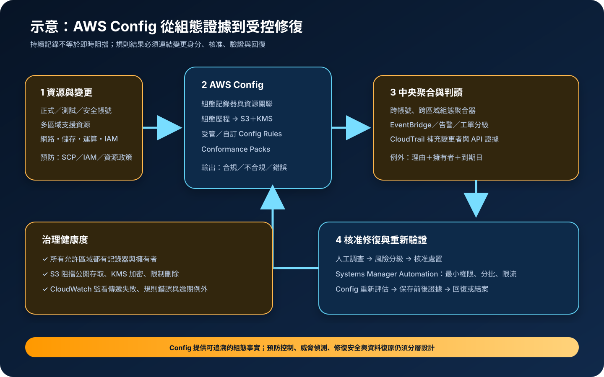

AWS Config：資源清冊、組態歷程與合規評估
AWS Config 持續記錄支援資源的組態狀態與關聯，並以規則評估是否符合預期政策。它能回答「某項資源何時變成這個狀態」，但不能取代即時威脅偵測、完整日誌平台或經驗證的風險處置流程。
作者：Dr. William｜查閱與發布：2026-09-15
服務定位
AWS Config 是 AWS 的資源組態清冊、歷程與合規評估服務。啟用組態記錄器後，服務會針對支援的資源類型建立組態項目，呈現屬性、關聯與變更；Config Rules 可使用 AWS 受管規則或自訂規則判斷資源是否合規，組態聚合器則可集中多帳號、多區域結果。
Config 的「不合規」是規則條件的評估結果，不等於已確認的資安事件；「合規」也不表示沒有弱點。完整治理仍需結合 CloudTrail 的 API 行為、CloudWatch 的指標與告警、Security Hub 或其他偵測能力，以及人員調查、例外核准與復原演練。
核心概念與適用邊界
主要元件
- 組態記錄器：依帳號與區域記錄指定資源類型；新增資源類型是否自動納入，取決於記錄策略。
- 組態項目與歷程：保存特定時間點的資源屬性、關聯、狀態與相關事件，支援時間軸調查。
- 傳遞通道：將組態快照與歷程送往指定 S3 儲存貯體，並可透過 SNS 通知。
- Config Rules：以變更觸發或定期方式評估；AWS 受管規則提供常見控制，自訂規則可透過 Lambda 或 Guard 建立。
- 聚合器與 Conformance Packs：集中多帳號、多區域結果，並以一組規則與修復動作部署治理基線。
邊界與依賴
- Config 是區域性服務；若只在單一區域啟用，其他區域的資源與變更可能不在視野內。
- 並非所有資源屬性、短暫狀態或服務都一定受支援，需查核當前支援資源清單。
- 規則評估可能有傳遞與處理延遲，不應作為需要毫秒級阻擋的唯一控制。
- 規則只驗證已編碼的條件，無法自行判斷資料分類、業務必要性或核准例外是否合理。
- 自動修復依賴 Systems Manager Automation 與 IAM 權限；錯誤邏輯可能放大中斷。
適合與不適合的使用情境
適合
- 需要建立跨帳號、跨區域資源清冊，追查安全群組、儲存服務、加密或標籤何時改變。
- 需要持續檢查公開存取、加密、必要標籤、允許連接埠或備份政策等可明確描述的條件。
- 需要將控制基線封裝成 Conformance Pack，持續量測不同環境的合規趨勢與例外。
- 需要把不合規結果送入事件處理流程，先分類、核准，再執行受控修復。
不適合或不能單獨完成
- 需要即時阻擋 API 呼叫時，應使用 IAM、SCP、資源政策、網路控制或其他預防性控制。
- 需要偵測惡意程式、異常登入、資料外洩或執行階段攻擊時，不能只依賴組態評估。
- 資源類型或必要屬性不受記錄支援時，須另建清冊、遙測或自訂稽核流程。
- 沒有資產擁有者、例外期限與修復責任時，增加更多規則只會累積未處理結果。
示意故事案例：多帳號公開存取治理
以下為示意案例，不代表特定組織或正式部署。 一個電商團隊將正式、測試與安全工具分置不同 AWS 帳號。每個啟用區域都記錄必要資源類型，S3 組態歷程送往安全帳號中阻擋公開存取、啟用版本控制並採 KMS 加密的儲存貯體。組織聚合器集中呈現規則結果，檢查 S3 公開存取、未受限的安全群組、未加密儲存與必要備份標記。
當測試人員誤將安全群組管理連接埠開放給所有來源，Config 在記錄變更後把資源評為不合規，EventBridge 將結果送入分級處理流程。CloudTrail 補充變更身分與 API 證據；高風險項目須由值班人員確認，才以受限的 Systems Manager Automation 修復。處理紀錄保存原始值、修復值、核准者與驗證結果。正式環境另以 SCP 與 IAM 阻擋高風險操作，避免把延遲發現誤當成即時預防。

建置與運作流程
- 定義治理範圍：建立帳號、區域、資源類型、資料分類、擁有者、必要控制、例外期限及證據保存需求。
- 建立中央證據目的地：S3 儲存貯體阻擋公開存取、啟用版本控制與 KMS 加密，使用最小權限貯體政策並限制刪除。
- 啟用完整記錄：在所有允許區域部署組態記錄器與傳遞通道；明確決定是否納入新支援資源類型及全球資源。
- 建立聚合視圖：使用 Organizations 或明確授權，將成員帳號與區域的組態及規則結果聚合到安全治理帳號。
- 分層導入規則：先以高風險且誤報較少的控制開始，記錄規則擁有者、觸發模式、參數、嚴重度與適用範圍。
- 治理例外：每項例外包含業務理由、風險接受者、補償控制、到期日與重新評估條件，不把長期抑制當成修復。
- 串接調查與告警：以 EventBridge、通知或整合平台建立工單；利用 CloudTrail 確認變更者、時間與 API，再判斷處置。
- 限制自動修復：Automation Role 只允許必要動作與資源，先在非正式環境及少量資源測試，設定重試、逾時與失敗中止。
- 驗證與演練：定期製造已知測試偏差，確認記錄、評估、告警、調查、修復與重新評估全程可用；測試跨區證據存取。
成本、可用性與維運考量
AWS Config 通常依記錄的組態項目、規則評估及 Conformance Pack 評估計費；自訂 Lambda 規則、Systems Manager 自動修復、S3、SNS、EventBridge、CloudWatch、CloudTrail、KMS 與跨區資料傳輸可能另行收費。高頻變動資源、重複規則與過廣記錄範圍會增加費用，應依現行定價、區域與實際變更量估算。
服務按帳號與區域啟用，中央聚合器提供統一檢視，但不取代來源區域的記錄器。治理可用性應監看記錄器狀態、傳遞失敗、規則錯誤、過期評估與聚合授權；中央檢視暫時不可用時，來源組態仍須保持記錄，告警與調查也要有替代路徑。
Config 保存的是組態治理證據，不是工作負載資料備份。跨區復原仍需 AWS Backup、服務原生備份或複寫策略，並驗證 IAM、KMS 金鑰、S3 證據目的地、規則、聚合器、EventBridge 路由及自動化文件可在備援區域運作。
AWS Config 特有資安風險與控制
- 記錄盲區：未啟用區域、漏選資源類型或新資源未納入會造成錯誤安全感；以 Organizations 自動部署並持續監看記錄器狀態。
- 規則設計錯誤：參數、範圍或自訂邏輯不正確會產生漏報與誤報；使用版本控制、測試案例、同儕審查及定期抽樣。
- 評估延遲：變更到記錄、評估、通知之間存在時間差；公開存取、網路暴露等高風險操作須再用 SCP、IAM、資源政策與預防性控制限制。
- 證據目的地遭竄改：S3 阻擋公開存取、採 KMS 加密、版本控制、Object Lock 或受控保留策略，並將寫入與刪除權限分離。
- 聚合角色權限過寬：聚合器與服務連結角色依官方必要權限建立；人員只取得查詢所需的短期唯讀角色，管理操作使用 MFA。
- 自動修復擴大事故：Automation Role 不得使用萬用資源權限；依嚴重度決定人工核准，採少量執行、錯誤門檻與回復步驟。
- 例外永久化：抑制或例外必須綁定擁有者、理由與到期日，CloudWatch 告警追蹤即將到期或持續不合規項目。
- 機密外洩：規則參數、自訂函式、通知、標籤與日誌不得存放任何有效敏感驗證資料；應用機密由 Secrets Manager 或 Parameter Store SecureString 管理。
- 調查證據不足：Config 顯示組態前後差異，CloudTrail 才能補充 API 與身分脈絡；兩者時間同步、集中保存與查詢權限須一起驗證。
共同責任邊界
AWS 負責 AWS Config 受管服務與底層雲端基礎設施的安全，並提供組態記錄、規則評估、聚合、API 與服務整合。客戶負責選擇帳號、區域及資源範圍，設定記錄器、傳遞通道、規則、參數、聚合授權、證據保存、例外與修復流程，並判斷結果是否符合業務及法規要求。
客戶仍須落實 IAM 最小權限、人員 MFA 與短期憑證、工作負載角色、網路隔離、公開存取預防控制、S3 與 KMS 加密、Secrets Manager／Parameter Store 機密管理、CloudTrail／CloudWatch 觀測，以及備份與跨區復原。AWS 不會替客戶決定何者屬於可接受風險，也不會保證自訂規則與修復邏輯符合實際需求。
上線前可執行檢查清單
- □ 所有帳號、允許區域、資源類型、控制擁有者與例外流程已有清冊。
- □ 每個必要區域的記錄器正在運作；新支援資源類型與全球資源記錄策略已明確設定。
- □ 組態歷程目的地阻擋公開存取、使用 KMS 加密與版本控制，寫入、讀取及刪除權限已分離。
- □ 管理人員使用聯合登入、MFA 與短期角色；聚合、規則及修復角色符合 IAM 最小權限。
- □ 高風險公開存取與網路暴露同時有 SCP、IAM、資源政策或網路層預防控制。
- □ 每項規則都有範圍、參數、嚴重度、測試案例、擁有者及誤報處理方式。
- □ 例外具有理由、風險接受者、補償控制與到期日，且到期前會產生告警。
- □ 自動修復先經測試與核准，執行範圍、並行數、逾時、錯誤門檻及回復步驟均受控。
- □ CloudTrail 可還原變更身分與 API；CloudWatch 或事件流程可監看記錄失敗、規則錯誤與不合規結果。
- □ Secrets Manager／Parameter Store 用於應用機密；組態、規則參數、標籤、通知與日誌均不含有效敏感驗證資料。
- □ 已依組態項目、規則評估、Conformance Pack、S3、KMS、事件、日誌與修復量估算成本。
- □ 已演練已知偏差、聚合中斷、證據存取、錯誤修復與區域中斷，並驗證備份及跨區程序。
AWS 官方一手來源
- AWS Config Developer Guide｜What Is AWS Config?（查閱：2026-09-15）
- Selecting which resources AWS Config records（查閱：2026-09-15）
- Evaluating resources with AWS Config Rules（查閱：2026-09-15）
- Multi-account multi-Region data aggregation（查閱：2026-09-15）
- Remediating noncompliant resources with AWS Config Rules（查閱：2026-09-15）
- Security best practices for AWS Config（查閱：2026-09-15）
- AWS Config pricing（查閱：2026-09-15）
- AWS Well-Architected Security Pillar｜Shared responsibility（查閱：2026-09-15）
內容說明
本文依查閱日可用的 AWS 官方文件整理，作為基礎學習與架構討論材料；實際部署仍須依最新區域支援、資源類型、功能、價格、配額、組織政策、資料分類、法規及復原演練結果調整。